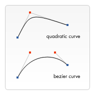

Drawing shapes with canvas
Now that we have set up our canvas environment, we can get into the details of how to draw on the canvas. By the end of this article, you will have learned how to draw rectangles, triangles, lines, arcs and curves, providing familiarity with some of the basic shapes. Working with paths is essential when drawing objects onto the canvas and we will see how that can be done.
The grid
Before we can start drawing, we need to talk about the canvas grid or coordinate space. Our HTML skeleton from the previous page had a canvas element 150 pixels wide and 150 pixels high.

Normally 1 unit in the grid corresponds to 1 pixel on the canvas. The origin of this grid is positioned in the top left corner at coordinate (0,0). All elements are placed relative to this origin. So the position of the top left corner of the blue square becomes x pixels from the left and y pixels from the top, at coordinate (x,y). Later in this tutorial we'll see how we can translate the origin to a different position, rotate the grid and even scale it, but for now we'll stick to the default.
Drawing rectangles
Unlike SVG, <canvas> only supports two primitive shapes: rectangles and paths (lists of points connected by lines). All other shapes must be created by combining one or more paths. Luckily, we have an assortment of path drawing functions which make it possible to compose very complex shapes.
First let's look at the rectangle. There are three functions that draw rectangles on the canvas:
fillRect(x, y, width, height)-
Draws a filled rectangle.
strokeRect(x, y, width, height)-
Draws a rectangular outline.
clearRect(x, y, width, height)-
Clears the specified rectangular area, making it fully transparent.
Each of these three functions takes the same parameters. x and y specify the position on the canvas (relative to the origin) of the top-left corner of the rectangle. width and height provide the rectangle's size.
Below is the draw() function from the previous page, but now it is making use of these three functions.
Rectangular shape example
function draw() {
const canvas = document.getElementById("canvas");
const ctx = canvas.getContext("2d");
ctx.fillRect(25, 25, 100, 100);
ctx.clearRect(45, 45, 60, 60);
ctx.strokeRect(50, 50, 50, 50);
}
This example's output is shown below.
The fillRect() function draws a large black square 100 pixels on each side. The clearRect() function then erases a 60x60 pixel square from the center, and then strokeRect() is called to create a rectangular outline 50x50 pixels within the cleared square (conceptually 50x50; in reality it's 52x52, as the next section will explain).
In upcoming pages we'll see two alternative methods for clearRect(), and we'll also see how to change the color and stroke style of the rendered shapes.
Unlike the path functions we'll see in the next section, all three rectangle functions draw immediately to the canvas.
Seeing blurry edges?
In the rectangle example above, and in all the examples to come, you may notice that the shapes' edges may appear blurrier than the equivalent shapes drawn with SVG or CSS. This is not because the canvas API is incapable of drawing sharp edges, but rather because of the way the canvas grid maps to the actual pixels on the screen, and also, in certain cases, because of how the browser scales the canvas. If the above example is not apparent enough, let's enlarge the canvas using CSS:
<canvas id="canvas" width="15" height="15"></canvas>
#canvas {
width: 300px;
height: 300px;
}
function draw() {
const canvas = document.getElementById("canvas");
const ctx = canvas.getContext("2d");
ctx.strokeRect(2, 2, 10, 10);
ctx.fillRect(7, 7, 1, 1);
}
In this example, we create our canvas really small (15x15), but then use CSS to scale it up to 300x300 pixels. As a result, each canvas pixel is now represented by a 20x20 block of CSS pixels. We draw a stroked rectangle from (2,2) to (12,12) and a filled rectangle from (7,7) to (8,8). It appears really blurry. This is because by default, when the browser scales raster images, it uses a smoothing algorithm to interpolate the extra pixels. This is great for photographs or canvas graphics with curly edges, but not so great for straight-edged shapes. To fix this, we can set image-rendering to pixelated:
#canvas {
image-rendering: pixelated;
}
Now, when the browser scales the canvas, it preserves the pixelation of the original as much as possible.
Note:
image-rendering: pixelated is not without its problems as a crisp-edge-preservation technique. When CSS pixels don't align with device pixels (if the devicePixelRatio is not an integer), certain pixels may be drawn larger than others, resulting in a non-uniform appearance. This is not an easy problem to solve, however, because it is impossible to fill device pixels precisely when the CSS pixels cannot accurately map to them.
But now another issue becomes apparent, one that you can actually also observe in the original rectangle example: the stroked rectangle is not only 2 pixels wide instead of 1, but also appears gray rather than the default black. This is because of how the coordinates are interpreted as shape boundaries.
If you look at the grid diagram above again, you can see that coordinates like 2 or 12 do not identify a pixel, but rather the edge between two pixels. In the images below, the grid represents the canvas coordinate grid. The squares between grid lines are actual on-screen pixels. In the first grid image below, a rectangle from (2,1) to (5,5) is filled. The entire area between them (light red) falls on pixel boundaries, so the resulting filled rectangle will have crisp edges.
![Three coordinate grids. The grid lines are actual pixels on the screen. The top left corner of each grid is labeled (0,0). In the first grid, a rectangle from (2,1) to (5,5) is filled in light-red color. In the second grid, (3,1) to (3,5) is joined with a 1-pixel thick royal blue line. The royal-blue line is centered on a grid line, extends from 2.5 to 3.5 on the x access, halfway into the pixels on either side of the graph line, with a light blue background on either side extending from 2 to 4 on the x-access. To avoid the light blue blur extension of the line in the second coordinate grid, the path in, the third coordinate grid is a royal-blue from line (3.5,1) to (3.5,5). The 1 pixel line width ends up completely and precisely filling a single pixel vertical line.](Drawing_shapes/canvas-grid.png)
If you consider a path from (3,1) to (3,5) with a line thickness of 1.0, you end up with the situation in the second image. The actual area to be filled (dark blue) only extends halfway into the pixels on either side of the path. An approximation of this has to be rendered, which means that those pixels being only partially shaded, and results in the entire area (the light blue and dark blue) being filled in with a color only half as dark as the actual stroke color. This is what happens with the 1.0 width line in the strokeRect() call in the rectangle example above.
To fix this, you have to be very precise in your path creation. Knowing that a 1.0 width line will extend half a unit to either side of the path, creating the path from centers of pixels results in the situation in the third image—the 1.0 line width ends up completely and precisely filling a single pixel vertical line.
Note: Be aware that in our vertical line example, the Y position still referenced an integer grid line position—if it hadn't, we would see pixels with half coverage at the endpoints.
So this is why we said earlier that the strokeRect(50, 50, 50, 50) call in the rectangle example was conceptually 50x50, but in reality it is 52x52. The actual filled region for the outline starts at (49.5, 49.5) and ends at (100.5, 100.5), and because of the partially filled pixels, the actually filled area is from (49,49) to (101,101), which is 52x52, and the edges are 2-pixel wide. To get a solid 1-pixel wide outline that is exactly 50x50, you would need to shrink the rectangle by the thickness of the outline (1px), and move it by half the thickness (0.5px):
function draw() {
const canvas = document.getElementById("canvas");
const ctx = canvas.getContext("2d");
ctx.strokeRect(2.5, 2.5, 9, 9);
ctx.fillRect(7, 7, 1, 1);
}
For even-width lines, each half ends up being an integer amount of pixels, so you want a path that is between pixels (that is, (3,1) to (3,5)), instead of down the middle of pixels.
While slightly painful when initially working with scalable 2D graphics, paying attention to the pixel grid and the position of paths ensures that your drawings will look correct regardless of scaling or any other transformations involved. A 1.0-width vertical line drawn at the correct position will become a crisp 2-pixel line when scaled up by 2, and will appear at the correct position.
This phenomenon of partially filled pixels also extends to shapes that don't align to the pixel grid. For example, consider a rotated rectangle (you'll learn about drawing it in the next section). To see what it's like with and without image-rendering: pixelated, we have two canvases side by side, and a third one drawn at full scale, with grid lines:
function draw(canvasId) {
const canvas = document.getElementById(canvasId);
const ctx = canvas.getContext("2d");
ctx.beginPath();
ctx.moveTo(3, 2);
ctx.lineTo(9, 4.5);
ctx.lineTo(6.5, 10.5);
ctx.lineTo(0.5, 8);
ctx.closePath();
ctx.fill();
}
function drawFullScale() {
const canvas = document.getElementById("canvas3");
const ctx = canvas.getContext("2d");
ctx.beginPath();
ctx.moveTo(60, 40);
ctx.lineTo(180, 90);
ctx.lineTo(130, 210);
ctx.lineTo(10, 160);
ctx.closePath();
ctx.fill();
ctx.strokeStyle = "lightgray";
for (let i = 0; i < 16; i++) {
ctx.moveTo(i * 20, 0);
ctx.lineTo(i * 20, 300);
ctx.moveTo(0, i * 20);
ctx.lineTo(300, i * 20);
ctx.stroke();
}
}
If scaling up an image makes it appear blurrier than intended, then scaling down an image would make it appear sharper. For example, if you want a canvas to appear as 300x150 pixels on the screen, you can create it as 600x300 pixels and then use CSS to scale it down. This is especially useful on high-DPI screens (such as Apple's Retina displays) where a CSS pixel is represented by multiple screen pixels, so if you faithfully paint a 300x150 pixel canvas, it will not have the same pixel resolution as other elements on the page.
Drawing paths
Now let's look at paths. A path is a list of points, connected by segments of lines that can be of different shapes, curved or not, of different width and of different color. A path, or even a subpath, can be closed. To make shapes using paths, we take some extra steps:
- First, you create the path.
- Then you use drawing commands to draw into the path.
- Once the path has been created, you can stroke or fill the path to render it.
Here are the functions used to perform these steps:
beginPath()-
Creates a new path. Once created, future drawing commands are directed into the path and used to build the path up.
- Path methods
-
Methods to set different paths for objects.
closePath()-
Adds a straight line to the path, going to the start of the current sub-path.
stroke()-
Draws the shape by stroking its outline.
fill()-
Draws a solid shape by filling the path's content area.
The first step to create a path is to call the beginPath(). Internally, paths are stored as a list of sub-paths (lines, arcs, etc.) which together form a shape. Every time this method is called, the list is reset and we can start drawing new shapes.
Note:
When the current path is empty, such as immediately after calling beginPath(), or on a newly created canvas, the first path construction command is always treated as a moveTo(), regardless of what it actually is. For that reason, you will almost always want to specifically set your starting position after resetting a path.
The second step is calling the methods that actually specify the paths to be drawn. We'll see these shortly.
The third, and an optional step, is to call closePath(). This method tries to close the shape by drawing a straight line from the current point to the start. If the shape has already been closed or there's only one point in the list, this function does nothing.
Note:
When you call fill(), any open shapes are closed automatically, so you don't have to call closePath(). This is not the case when you call stroke().
Drawing a triangle
For example, the code for drawing a triangle would look something like this:
function draw() {
const canvas = document.getElementById("canvas");
const ctx = canvas.getContext("2d");
ctx.beginPath();
ctx.moveTo(75, 50);
ctx.lineTo(100, 75);
ctx.lineTo(100, 25);
ctx.fill();
}
The result looks like this:
Moving the pen
One very useful function, which doesn't actually draw anything but becomes part of the path list described above, is the moveTo() function. You can probably best think of this as lifting a pen or pencil from one spot on a piece of paper and placing it on the next.
moveTo(x, y)-
Moves the pen to the coordinates specified by
xandy.
When the canvas is initialized or beginPath() is called, you typically will want to use the moveTo() function to place the starting point somewhere else. We could also use moveTo() to draw unconnected paths. Take a look at the smiley face below.
To try this for yourself, you can use the code snippet below. Just paste it into the draw() function we saw earlier.
function draw() {
const canvas = document.getElementById("canvas");
const ctx = canvas.getContext("2d");
ctx.beginPath();
ctx.arc(75, 75, 50, 0, Math.PI * 2, true); // Outer circle
ctx.moveTo(110, 75);
ctx.arc(75, 75, 35, 0, Math.PI, false); // Mouth (clockwise)
ctx.moveTo(65, 65);
ctx.arc(60, 65, 5, 0, Math.PI * 2, true); // Left eye
ctx.moveTo(95, 65);
ctx.arc(90, 65, 5, 0, Math.PI * 2, true); // Right eye
ctx.stroke();
}
The result looks like this:
If you'd like to see the connecting lines, you can remove the lines that call moveTo().
Note:
To learn more about the arc() function, see the Arcs section below.
Lines
For drawing straight lines, use the lineTo() method.
lineTo(x, y)-
Draws a line from the current drawing position to the position specified by
xandy.
This method takes two arguments, x and y, which are the coordinates of the line's end point. The starting point is dependent on previously drawn paths, where the end point of the previous path is the starting point for the following, etc. The starting point can also be changed by using the moveTo() method.
The example below draws two triangles, one filled and one outlined.
function draw() {
const canvas = document.getElementById("canvas");
const ctx = canvas.getContext("2d");
// Filled triangle
ctx.beginPath();
ctx.moveTo(25, 25);
ctx.lineTo(105, 25);
ctx.lineTo(25, 105);
ctx.fill();
// Stroked triangle
ctx.beginPath();
ctx.moveTo(125, 125);
ctx.lineTo(125, 45);
ctx.lineTo(45, 125);
ctx.closePath();
ctx.stroke();
}
This starts by calling beginPath() to start a new shape path. We then use the moveTo() method to move the starting point to the desired position. Below this, two lines are drawn which make up two sides of the triangle.
You'll notice the difference between the filled and stroked triangle. This is, as mentioned above, because shapes are automatically closed when a path is filled, but not when they are stroked. If we left out the closePath() for the stroked triangle, only two lines would have been drawn, not a complete triangle.
Arcs
To draw arcs or circles, we use the arc() or arcTo() methods.
arc(x, y, radius, startAngle, endAngle, counterclockwise)-
Draws an arc which is centered at (x, y) position with radius r starting at startAngle and ending at endAngle going in the given direction indicated by counterclockwise (defaulting to clockwise).
arcTo(x1, y1, x2, y2, radius)-
Draws an arc with the given control points and radius, connected to the previous point by a straight line.
Let's have a more detailed look at the arc method, which takes six parameters: x and y are the coordinates of the center of the circle on which the arc should be drawn. radius is self-explanatory. The startAngle and endAngle parameters define the start and end points of the arc in radians, along the curve of the circle. These are measured from the x axis. The counterclockwise parameter is a Boolean value which, when true, draws the arc counterclockwise; otherwise, the arc is drawn clockwise.
Note:
Angles in the arc function are measured in radians, not degrees. To convert degrees to radians you can use the following JavaScript expression: radians = (Math.PI/180)*degrees.
The following example is a little more complex than the ones we've seen above. It draws 12 different arcs all with different angles and fills.
The two for loops are for looping through the rows and columns of arcs. For each arc, we start a new path by calling beginPath(). In the code, each of the parameters for the arc is in a variable for clarity, but you wouldn't necessarily do that in real life.
The x and y coordinates should be clear enough. radius and startAngle are fixed. The endAngle starts at 180 degrees (half a circle) in the first column and is increased by steps of 90 degrees, culminating in a complete circle in the last column.
The statement for the clockwise parameter results in the first and third row being drawn as clockwise arcs and the second and fourth row as counterclockwise arcs. Finally, the if statement makes the top half stroked arcs and the bottom half filled arcs.
Note: This example requires a slightly larger canvas than the others on this page: 150 x 200 pixels.
function draw() {
const canvas = document.getElementById("canvas");
const ctx = canvas.getContext("2d");
for (let i = 0; i < 4; i++) {
for (let j = 0; j < 3; j++) {
ctx.beginPath();
const x = 25 + j * 50; // x coordinate
const y = 25 + i * 50; // y coordinate
const radius = 20; // Arc radius
const startAngle = 0; // Starting point on circle
const endAngle = Math.PI + (Math.PI * j) / 2; // End point on circle
const counterclockwise = i % 2 !== 0; // clockwise or counterclockwise
ctx.arc(x, y, radius, startAngle, endAngle, counterclockwise);
if (i > 1) {
ctx.fill();
} else {
ctx.stroke();
}
}
}
}
Bezier and quadratic curves
The next type of paths available are Bézier curves, available in both cubic and quadratic varieties. These are generally used to draw complex organic shapes.
quadraticCurveTo(cp1x, cp1y, x, y)-
Draws a quadratic Bézier curve from the current pen position to the end point specified by
xandy, using the control point specified bycp1xandcp1y. bezierCurveTo(cp1x, cp1y, cp2x, cp2y, x, y)-
Draws a cubic Bézier curve from the current pen position to the end point specified by
xandy, using the control points specified by (cp1x,cp1y) and (cp2x,cp2y).
The difference between these is that a quadratic Bézier curve has a start and an end point (blue dots) and just one control point (indicated by the red dot) while a cubic Bézier curve uses two control points.

The x and y parameters in both of these methods are the coordinates of the end point. cp1x and cp1y are the coordinates of the first control point, and cp2x and cp2y are the coordinates of the second control point.
Using quadratic and cubic Bézier curves can be quite challenging, because unlike vector drawing software like Adobe Illustrator, we don't have direct visual feedback as to what we're doing. This makes it pretty hard to draw complex shapes. In the following example, we'll be drawing some simple organic shapes, but if you have the time and, most of all, the patience, much more complex shapes can be created.
There's nothing very difficult in these examples. In both cases we see a succession of curves being drawn which finally result in a complete shape.
Quadratic Bezier curves
This example uses multiple quadratic Bézier curves to render a speech balloon.
function draw() {
const canvas = document.getElementById("canvas");
const ctx = canvas.getContext("2d");
// Quadratic curves example
ctx.beginPath();
ctx.moveTo(75, 25);
ctx.quadraticCurveTo(25, 25, 25, 62.5);
ctx.quadraticCurveTo(25, 100, 50, 100);
ctx.quadraticCurveTo(50, 120, 30, 125);
ctx.quadraticCurveTo(60, 120, 65, 100);
ctx.quadraticCurveTo(125, 100, 125, 62.5);
ctx.quadraticCurveTo(125, 25, 75, 25);
ctx.stroke();
}
Cubic Bezier curves
This example draws a heart using cubic Bézier curves.
function draw() {
const canvas = document.getElementById("canvas");
const ctx = canvas.getContext("2d");
// Cubic curves example
ctx.beginPath();
ctx.moveTo(75, 40);
ctx.bezierCurveTo(75, 37, 70, 25, 50, 25);
ctx.bezierCurveTo(20, 25, 20, 62.5, 20, 62.5);
ctx.bezierCurveTo(20, 80, 40, 102, 75, 120);
ctx.bezierCurveTo(110, 102, 130, 80, 130, 62.5);
ctx.bezierCurveTo(130, 62.5, 130, 25, 100, 25);
ctx.bezierCurveTo(85, 25, 75, 37, 75, 40);
ctx.fill();
}
Rectangles
In addition to the three methods we saw in Drawing rectangles, which draw rectangular shapes directly to the canvas, there's also the rect() method, which adds a rectangular path to a currently open path.
rect(x, y, width, height)-
Draws a rectangle whose top-left corner is specified by (
x,y) with the specifiedwidthandheight.
Before this method is executed, the moveTo() method is automatically called with the parameters (x,y). In other words, the current pen position is automatically reset to the default coordinates.
Making combinations
So far, each example on this page has used only one type of path function per shape. However, there's no limitation to the number or types of paths you can use to create a shape. So in this final example, let's combine all of the path functions to make a set of very famous game characters.
function draw() {
const canvas = document.getElementById("canvas");
const ctx = canvas.getContext("2d");
roundedRect(ctx, 12, 12, 184, 168, 15);
roundedRect(ctx, 19, 19, 170, 154, 9);
roundedRect(ctx, 53, 53, 49, 33, 10);
roundedRect(ctx, 53, 119, 49, 16, 6);
roundedRect(ctx, 135, 53, 49, 33, 10);
roundedRect(ctx, 135, 119, 25, 49, 10);
ctx.beginPath();
ctx.arc(37, 37, 13, Math.PI / 7, -Math.PI / 7, false);
ctx.lineTo(31, 37);
ctx.fill();
for (let i = 0; i < 8; i++) {
ctx.fillRect(51 + i * 16, 35, 4, 4);
}
for (let i = 0; i < 6; i++) {
ctx.fillRect(115, 51 + i * 16, 4, 4);
}
for (let i = 0; i < 8; i++) {
ctx.fillRect(51 + i * 16, 99, 4, 4);
}
ctx.beginPath();
ctx.moveTo(83, 116);
ctx.lineTo(83, 102);
ctx.bezierCurveTo(83, 94, 89, 88, 97, 88);
ctx.bezierCurveTo(105, 88, 111, 94, 111, 102);
ctx.lineTo(111, 116);
ctx.lineTo(106.333, 111.333);
ctx.lineTo(101.666, 116);
ctx.lineTo(97, 111.333);
ctx.lineTo(92.333, 116);
ctx.lineTo(87.666, 111.333);
ctx.lineTo(83, 116);
ctx.fill();
ctx.fillStyle = "white";
ctx.beginPath();
ctx.moveTo(91, 96);
ctx.bezierCurveTo(88, 96, 87, 99, 87, 101);
ctx.bezierCurveTo(87, 103, 88, 106, 91, 106);
ctx.bezierCurveTo(94, 106, 95, 103, 95, 101);
ctx.bezierCurveTo(95, 99, 94, 96, 91, 96);
ctx.moveTo(103, 96);
ctx.bezierCurveTo(100, 96, 99, 99, 99, 101);
ctx.bezierCurveTo(99, 103, 100, 106, 103, 106);
ctx.bezierCurveTo(106, 106, 107, 103, 107, 101);
ctx.bezierCurveTo(107, 99, 106, 96, 103, 96);
ctx.fill();
ctx.fillStyle = "black";
ctx.beginPath();
ctx.arc(101, 102, 2, 0, Math.PI * 2, true);
ctx.fill();
ctx.beginPath();
ctx.arc(89, 102, 2, 0, Math.PI * 2, true);
ctx.fill();
}
// A utility function to draw a rectangle with rounded corners.
function roundedRect(ctx, x, y, width, height, radius) {
ctx.beginPath();
ctx.moveTo(x, y + radius);
ctx.arcTo(x, y + height, x + radius, y + height, radius);
ctx.arcTo(x + width, y + height, x + width, y + height - radius, radius);
ctx.arcTo(x + width, y, x + width - radius, y, radius);
ctx.arcTo(x, y, x, y + radius, radius);
ctx.stroke();
}
The resulting image looks like this:
We won't go over this in detail, since it's actually surprisingly simple. The most important things to note are the use of the fillStyle property on the drawing context, and the use of a utility function (in this case roundedRect()). Using utility functions for bits of drawing you do often can be very helpful and reduce the amount of code you need, as well as its complexity.
We'll take another look at fillStyle, in more detail, later in this tutorial. Here, all we're doing is using it to change the fill color for paths from the default color of black to white, and then back again.
Shapes with holes
To draw a shape with a hole in it, we need to draw the hole in different clock directions as we draw the outer shape. We either draw the outer shape clockwise and the inner shape anticlockwise or the outer shape anticlockwise and the inner shape clockwise.
function draw() {
const canvas = document.getElementById("canvas");
const ctx = canvas.getContext("2d");
ctx.beginPath();
// Outer shape clockwise ⟳
ctx.moveTo(0, 0);
ctx.lineTo(150, 0);
ctx.lineTo(75, 129.9);
// Inner shape anticlockwise ↺
ctx.moveTo(75, 20);
ctx.lineTo(50, 60);
ctx.lineTo(100, 60);
ctx.fill();
}
In the example above, the outer triangle goes clockwise (move to the top-left corner, then draw a line to the top-right corner, and finish at the bottom) and the inner triangle goes anticlockwise (move to the top, then line to the bottom-left corner, and finish at the bottom-right).
Path2D objects
As we have seen in the last example, there can be a series of paths and drawing commands to draw objects onto your canvas. To simplify the code and to improve performance, the Path2D object, available in recent versions of browsers, lets you cache or record these drawing commands. You are able to play back your paths quickly.
Let's see how we can construct a Path2D object:
Path2D()-
The
Path2D()constructor returns a newly instantiatedPath2Dobject, optionally with another path as an argument (creates a copy), or optionally with a string consisting of SVG path data.
new Path2D(); // empty path object
new Path2D(path); // copy from another Path2D object
new Path2D(d); // path from SVG path data
All path methods like moveTo, rect, arc or quadraticCurveTo, etc., which we got to know above, are available on Path2D objects.
The Path2D API also adds a way to combine paths using the addPath method. This can be useful when you want to build objects from several components, for example.
Path2D.addPath(path [, transform])-
Adds a path to the current path with an optional transformation matrix.
Path2D example
In this example, we are creating a rectangle and a circle. Both are stored as a Path2D object, so that they are available for later usage. With the new Path2D API, several methods got updated to optionally accept a Path2D object to use instead of the current path. Here, stroke and fill are used with a path argument to draw both objects onto the canvas, for example.
function draw() {
const canvas = document.getElementById("canvas");
const ctx = canvas.getContext("2d");
const rectangle = new Path2D();
rectangle.rect(10, 10, 50, 50);
const circle = new Path2D();
circle.arc(100, 35, 25, 0, 2 * Math.PI);
ctx.stroke(rectangle);
ctx.fill(circle);
}
Using SVG paths
Another powerful feature of the new canvas Path2D API is using SVG path data to initialize paths on your canvas. This might allow you to pass around path data and re-use them in both, SVG and canvas.
The path will move to point (M10 10) and then move horizontally 80 points to the right (h 80), then 80 points down (v 80), then 80 points to the left (h -80), and then back to the start (z). You can see this example on the Path2D constructor page.
const p = new Path2D("M10 10 h 80 v 80 h -80 Z");